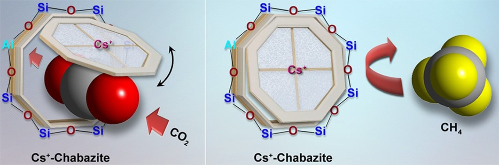

The Shang Adsorption and Separation Lab

List of Invited Scholarly Presentations
- “Molecular Trapdoor Mechanism for Carbon Capture”, 09/09/2024~10/09/2024, Integrated Hydrogen Production with Carbon Capture and Utilisation, Surrey, UK, Brunel University London and University of Surrey. (Keynote Speaker)
- “Molecular Trapdoor Mechanism for Selective Gas Adsorption”, 08/07/2024~11/07/2024, 2nd International Congress on Separation and Purification Technology (ISPT 2024), Zhengzhou, China, Elsevier and Henan University. (Keynote Speaker)
- “Advancing Adsorption Technology for Mitigating Nitrogen Oxides Pollution from Green Fuels Utilization”, 06/07/2024~08/07/2024, 1st International Forum on Green Energy Science and Technology Innovations (IF-GESTI), Beijing, China, Tsinghua University and the China Energy Research Association.
- “Selective Adsorption for Gas Separation”, 07/05/2024, Invited Seminar at Tsinghua University, Beijing, China, Tsinghua University.
- “Selective Adsorption for Gas Separation”, 05/24/2024, Invited Seminar at National Taiwan University, Taipei, Taiwan, National Taiwan University.
- “Selective Adsorption for Gas Separation”, 05/23/2024, Invited Seminar at NSRRC, Taiwan, NSRRC.
- “Selective Adsorption for Gas Separation”, 05/23/2024, Invited Seminar at National Yang Ming Chiao Tung University, Hsinchu, Taiwan, National Yang Ming Chiao Tung University.
- “Selective Adsorption for Gas Separation”, 05/22/2024, Invited Seminar at National Tsing Hua University, Hsinchu, Taiwan, National Tsing Hua University.
- “Selective Adsorption for Gas Separation”, 04/24/2024, Invited Seminar at National Cheng Kung University, Tainan, Taiwan, National Cheng Kung University.
- “Selective Adsorption for Gas Separation”, 01/12/2023, Invited Seminar at Ewha Womans University, Seoul, Korea, Ewha Womans University.
- “Development of robust adsorbents for low-temperature NOx adsorption”, 17/11/2023~20/11/2023, “111” Project Workshop on Functional Porous Materials & Reticular Chemistry of Porous Polymers, Haikou, China, Jilin University and Northeast Normal University.
- “Selective gas adsorption for carbon capture and NO2 capture”, 11/10/2023~14/10/2023, the 22nd Chinese Zeolite Conference, Luoyang, P.R. China, the Chinese Zeolite Association.
- “Selective gas adsorption for carbon capture and NO2 capture”, 07/06/2023, Invited Seminar at Peking University Shenzhen Graduate School, Shenzhen, China, Peking University Shenzhen Graduate School.
- “Development of robust adsorbents with balanced binding affinity for ambient temperature NO2 adsorption”, 28/3/2023, “111” Project Workshop on New Perspectives of Functional Nanoporous Materials, Changchun, China, Jilin University (Virtual).
- “Introduction to Carbon Capture Technologies”, 04/11/2022, Invited Talk for EPD’s Training Programme “Carbon Capture, Utilization and Storage”, Hong Kong, Environmental Protection Department (EPD). (Invited Speaker and Panelist)
- “Adsorption Technology for Energy and Environmental Applications”, 17/08/2022, Invited Seminar at Northeast Agricultural University, Harbin, China (Virtual), Northeast Agricultural University.
- “Adsorption Technology for Energy and Environmental Applications”, 30/05/2022, Invited Seminar at Dalian University of Technology, Dalian, China (Virtual), Dalian University of Technology.
- “Development of robust adsorbents with balanced binding affinity for ambient NO2 adsorption”, 22/05/2022~27/05/2022, FOA 14, Colorado, United States (Virtual), International Adsorption Society.
- “Carbon capture by adsorption technology for achieving carbon neutrality”, 14/12/2021, International Expert Seminar Series, Changchun, China (Virtual), Jilin University.
- “Adsorption Technology for Sustainable Energy and Environmental Applications”, 09/06/2021, Global Internship Lecture by Korea University 2021, Seoul, Korea (Virtual), Korea University.
- “Visible light photocatalytic degradation of gaseous formaldehyde by ‘carbonized’ porous coordination polymer (ZIF-8)”, 11/05/2021~11/05/2021, The Asia Pacific Biochar Conference (APBC2021), Hong Kong (virtual), The Hong Kong Polytechnic University. (Keynote Speaker)
- “Adsorption-Based Gas Separation and Storage for Environmental and Energy Applications”, 12/01/2021, YONSEI-CBE International Workshop Series: Separation Technology 2021, Seoul, Korea (Virtual), Yonsei University.
- “Transition Metal Inserted Porphyrin Metal-Organic Frameworks as π-backbonding Adsorbents for NO2 Removal”, 15/12/2020~17/12/2020, the 2nd Engineering Sustainable Development Conference, Seoul (Virtual), AIChE's Institute for Sustainability & the Association of Pacific Rim Universities (APRU). (Keynote Speaker)
- “Adsorption Technology for Sustainable Energy and Environmental Applications”, 03/01/2020, Research Visit to Henan University, Henan, China, Henan University.
- “Adsorption Technology for Sustainable Energy and Environmental Applications”, 12/12/2019~13/12/2019, the 1st Engineering Sustainable Development Conference, Seoul, Korea, AIChE's Institute for Sustainability & the Association of Pacific Rim Universities (APRU).
- “Adsorption Technology for Gas Separation and Storage”, 17/8/2019, Research Visit to Yantai University, Yantai, China, Colleague of Chemistry and Chemical Engineering at Yantai University.
- “Active Adsorbents for Molecular Separation”, 24/10/2019, Research Visit to Zhejiang University, Hangzhou, China, College of Chemical and Biological Engineering at Zhejiang University.
- “Revisit the molecular sieving behaviour in zeolite LTA for high-performance gas separation”, 11/8/2019~14/8/2019, “111” Project Workshop (III) New Perspectives of Functional Nanoporous Materials, Changchun, China, Jilin University.
- “Revisit the molecular sieving behaviour in zeolite LTA for high-performance gas separation”, 12/06/2019~15/06/2019, the 3rd International Conference on Bioresources, Energy, Environment, and Materials Technology, Hong Kong, The Hong Kong Polytechnic University.
- “Adsorption Technology for Gas Separation and Storage”, 27/04/2019~28/04/2019, the Sixth Wuhan University International Forum for Interdisciplinary Sciences and Engineering Featured Forum, Wuhan, China, Wuhan University.
- “Adsorption Technology for Gas Separation and Storage”, 10/04/2019~13/04/2019, the 5th Silk Road International Spring Symposium for Distinguished Young Scholars (XJTU), Xi’an, China, Xi'an Jiaotong University.
- “Smart Adsorbents for High-Performance Biogas Upgrading”, 02/04/2019~04/04/2019, Mission Innovation-The 2nd International Conference on Sustainable Biofuels, Yantai, China, Guangzhou Institute of Energy Conversion, Chinese Academy of Sciences, Department of Science and technology of Shandong Province and Yantai Municipal People’s Government.
- “Active Adsorbents for Molecular Separation”, 27/12/2018~28/12/2018, Fudan-Guanghua International Forum for Young Scholars, Shanghai, China, Fudan University.
- “Reduction of Harmful Gas Emissions by Adsorption Separation Technology”, 26/11/2018~28/11/2018, Asia Resilience Center (ARC) Conference 2018: Resilience and New Leadership in the WORLD, Seoul, Korea, Korea University.
- “Active Adsorbents for Molecular Separation”, 19/08/2018~24/08/2018, “111” Project Workshop (III) New Perspectives of Functional Nanoporous Materials, Changchun, China, Jilin University.
- “Reduction of Harmful Gas Emissions by Adsorption Separation Technology”, 16/8/2018~18/8/2018, the 4th International Conference on Contaminated Land, Ecological Assessment and Remediation, Hong Kong, The Hong Kong Polytechnic University.
- “Active Adsorbents for Molecular Separation”, 25/06/2018, Research Visit to Korea Biochar Research Centre, Seoul, Korea, Korea University.
- “Active Adsorbents for Molecular Separation”, 11/05/2018~14/05/2018, The Yong Scholar of China and Abroad-the 3rd session of “Xinghai” Forum, Harbin, China, Harbin Engineering University.
- “The transport of CO2 over the sea using a proper carrier”, 27/04/2018, the International Conference on Global Sustainability and the Belt and Road Initiative: Engaging the World from Hong Kong, Hong Kong, The Chinese University of Hong Kong. (Panelist)
- “Active Adsorbents for Molecular Separation”, 30/03/2018~31/03/2018, The 2nd Wuhan University of Technology Yong Scholars Forum, Wuhan, China, Wuhan University of Technology.
- “Active Adsorbents for Molecular Separation”, 08/01/2018, Research Visit to Xinjiang University, Urumqi, China, Xinjiang University.
- “Active Adsorbents for Molecular Separation”, 22/11/2017, Indoor Air Quality and VOC Clean Technology Workshop, Seoul, Korea, Hanyang University.
- “Active Adsorbents for Molecular Separation”, 20/11/2017, Research Visit to Inorganic Materials for Separation and Reaction Lab, Seoul, Korea, Korea University.
- “Active Adsorbents for Molecular Separation”, 29/06/2017, Research Visit to Institute of Process Engineering (IPE), Chinese Academy of Sciences (CAS), Beijing, China, Chinese Academy of Sciences (CAS).
- “Active Adsorbents for Molecular Separation”, 28/06/2017, Research Visit to Institute of Beijing Computational Science Research Center, Beijing, China, Beijing Computational Science Research Center.
- “Active Adsorbents for Molecular Separation”, 27/06/2017, Research Visit to Department of Environmental Science and Engineering, Tsinghua University, Beijing, China, Tsinghua University.
- “Active Adsorbents for Molecular Separation”, 26/06/2017, Research Visit to School of Mechanical Engineering, University of Science and Technology Beijing, Beijing, China, University of Science and Technology Beijing.
- “Active Adsorbents for Molecular Separation”, 19/06/2017, Research Visit to School of Chemistry and Chemical Engineering, Shihezi University, Urumqi, China, Shihezi University.
- “Active Adsorbents for Molecular Separation”, 06/06/2017, Research Visit to School of Chemical Engineering and Technology, China University of Mining and Technology, Xuzhou, China, China University of Mining and Technology.
- “Active Adsorbents for Molecular Separation”, 25/12/2016, Research Visit to School of Resources and Civil Engineering, Northeastern University, Shenyang, China, Northeastern University.
- “Active Adsorbents for Molecular Separation”, 27/10/2016, Research Visit to School of Chemical Science and Engineering, Tongji University, Shanghai, China, Tongji University.
- “Molecular Sieving: does size really matter?”, 21/11/2013~22/11/2013, 2013 Australian Synchrotron User Meeting, Melbourne, Australian Synchrotron, Australia, Australian Synchrotron (ANSTO). (Plenary Presentation)
List of Other Scholarly Presentations
- The 2023 Gordon Research Conference on Nanoporous Materials and Their Applications: Expanding the Horizons of Porous Materials Design and Applications, Andover, NH., the US, 06/08/2023~11/08/2023. (Poster)
- The 1st Mediterranean Conference on Porous Materials, Crete, Greece, 17/05/2023~19/05/2023. (Oral Presentation)
- The 1st International Congress on Separation and Purification Technology (ISPT 2022), Elsevier, virtual, 10/12/2022~14/12/2022. (Oral Presentation)
- Nature Conference: Waste Management and Valorization for a Sustainable Future, Korea, 26/10/2021~28/10/2021. (Poster Presentation)
- The 8th Conference of the Federation of European Zeolite Associations (FEZA 2021), UK, 05/07/2021~09/07/2021. (Oral Presentation)
- The 20th International Conference on Heavy Metals in the Environment (ICHMET 2020), FKI Tower, Seoul, Korea, 25/10/2020~29/10/2020. (Poster)
- The 20th Chinese Zeolite Conference, Zhejiang, China, 22/10/2019~25/10/2019. (Oral Presentation)
- The 9th International Zeolite Conference, Perth, Australia, 07/07/2019~12/07/2019. (Two Oral Presentations)
- FOA13, Cairns, Australia, 26/05/2019~31/05/2019. (Oral Presentation)
- The 6th International Conference on Multifunctional, Hybrid and Nanomaterials, Sitges, Spain, 11/03/2019~15/03/2019. (Oral Presentation)
- 8th Pacific Basin Conference on Adsorption Science and Technology, Hokkaido University, Sapporo, Japan, 04/09/2018~06/09/2018. (Oral Presentation)
- International Symposium on Zeolite and Microporous Crystals, Yokohama, Japan, 05/08/2018~09/08/2018. (Oral Presentation)
- The 31st Annual Conference of Chinese Chemical Society, Hangzhou, China, 05/05/2018~08/05/2018. (Oral Presentation)
- The 19th Chinese Zeolite Conference, Wuhan, China, 24/10/2017~28/10/2017. (Poster)
- COPSXI, Avignon, France, 14/05/2017~18/05/2017. (Poster)
- The 2017 Gordon Research Conference on Nanoporous Materials and Their Applications: The Path from Novel Nanoporous Materials to Commercial Applications, Andover, NH., the US, 06/08/2017~11/08/2017. (Poster)
- The 6th Asia-Oceania Conference on Sustainable and Green Chemistry (AOC-SGC6), Hong Kong, China, 27/11/2016~30/11/2016. (Oral Presentation)
- The Fifth International Congress on Sustainability Science & Engineering (ICOSSE ’16), Suzhou, China, 22/10/2016~27/10/2016. (Oral Presentation)
- FOA12, Friedrichshafen, Germany, 29/05/2016~03/06/2016. (Oral Presentation)
- FOA12, Friedrichshafen, Germany, 29/05/2016~03/06/2016. (Poster)
- APCChE Congress 2015, Melbourne, Australia, 27/09/2015~01/10/2015. (Poster)
- International Symposium on Zeolite and Microporous Crystals, Sapporo, Japan, 28/06/2015~02/07/2015. (Oral Presentation)
- The 2nd Euro-Asia Zeolite Conference, Nice, France, 25/01/2015~28/01/2015. (Poster)
- CO2CRC Research Symposium 2014, RACV Resort, Torquay, Victoria, 25/11/2014~26/11/2014. (Poster)
- CO2CRC Research Symposium 2013, Wrest Point Tasmania, Hobart, Tasmania, 19/11/2013~20/11/2013. (Oral Presentation)
- AOFSRR, Egret Himeji, Japan, 21/09/2013~24/09/2013. (Poster)
- FOA11, Baltimore, the US, 19/05/2013~24/05/2013. (Oral Presentation)
- FOA11, Baltimore, the US, 19/05/2013~24/05/2013. (Poster)
- CO2CRC Research Symposium 2012, Palmer Coolum Resort, Sunshine Coast, Queensland, 27/11/2012~29/11/2012. (Poster)
- The 243 American Chemical Society Meeting & Exposition, San Diego, the US, 25/03/2012~29/03/2012. (Oral Presentation)
- Supercomputing 11, Seattle, the US, 12/11/2011~18/11/2011. (Poster)
- CO2CRC Research Symposium 2011, Adelaide, SA, 29/11/2011~01/12/2011. (Oral Presentation)
- CHEMECA2010, Adelaide, Australia, 26/09/2010~29/09/2010. (Poster)